用 AI 自动化科学发现的实验循环 —— “Automating discovery to accelerate science and engineering for the world.”
共事 14–30 年，建造了 Google 二十年技术底座——这份 BP 的第一页和第二页就是他们自己的简历。合影为 Wired 独家采访官方摄影（2026-08），可点击放大。
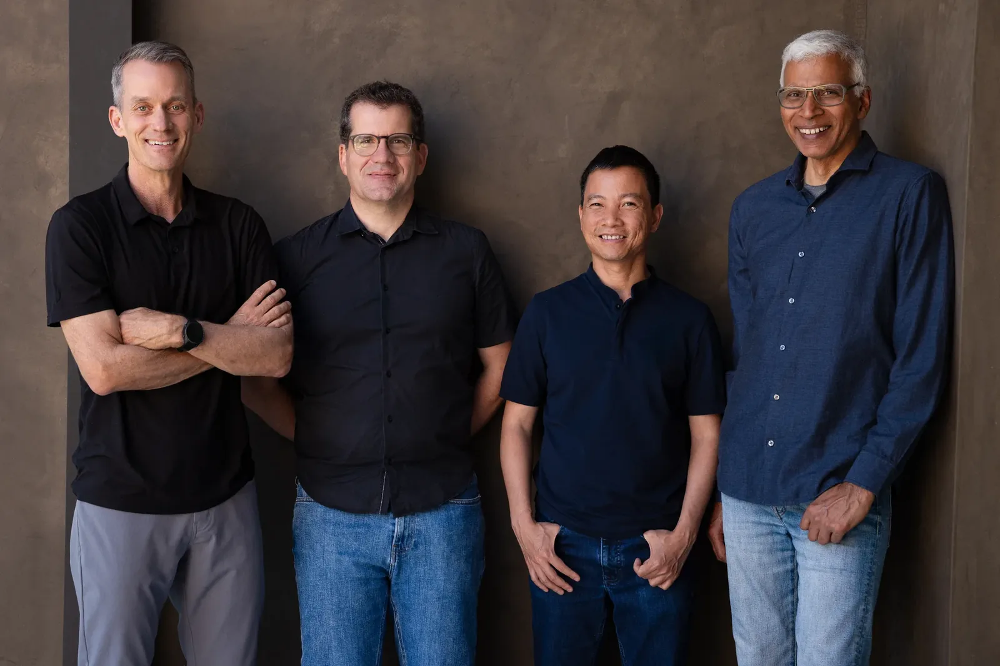
这是整份 BP 的灵魂——不是造更好的锤子，是造一台能自动造锤子的机器。
自动化「提出假设 → 设计实验 → 执行 → 评估 → 迭代」的完整实验循环，并行跑成千上万个实验，把科学发现从人肉慢循环变成 AI 快循环。
Khosla 领投人原话：“AI is the researcher.”——AI 不再是研究工具，而是研究者本身。四人过去 20 年建造了 Google 的 AI 基础设施，现在要造那台能自动造锤子的机器。
一旦实验循环被 AI 跑通，行业瓶颈不再是人才或算力，而是循环跑得多快。药物、材料、芯片、能源全都会被拉上快车道——AI 研究 AI 的正循环。
propose → implement/run → evaluate → iterate
现在的科研是人肉慢循环：提假设、跑实验、看结果、调方案、再来一轮。Discovery Loop 想用 frontier AI + 大规模算力 接管整个流程，同时跑数千个实验，根据结果自动迭代下一轮。
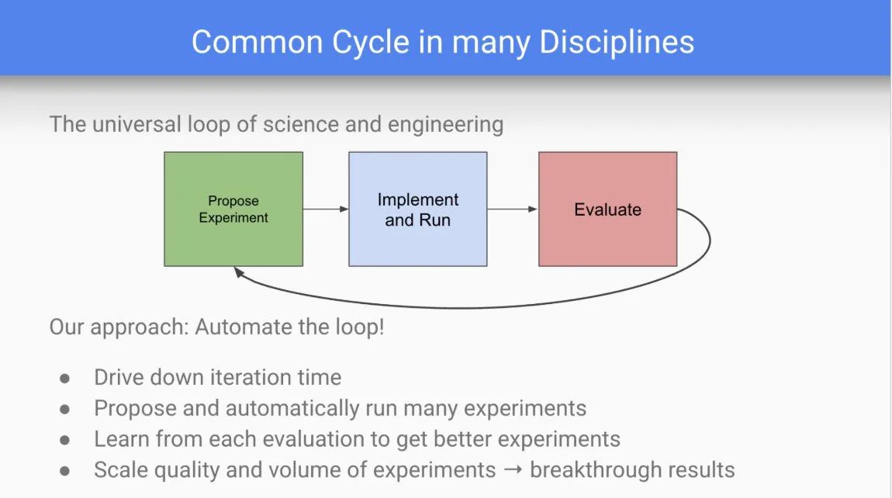
提出实验 → 实施运行 → 评估 → 反馈回环——「自动化该循环」正是 Discovery Loop 的方法论。图源 Jeff Dean X 推文。
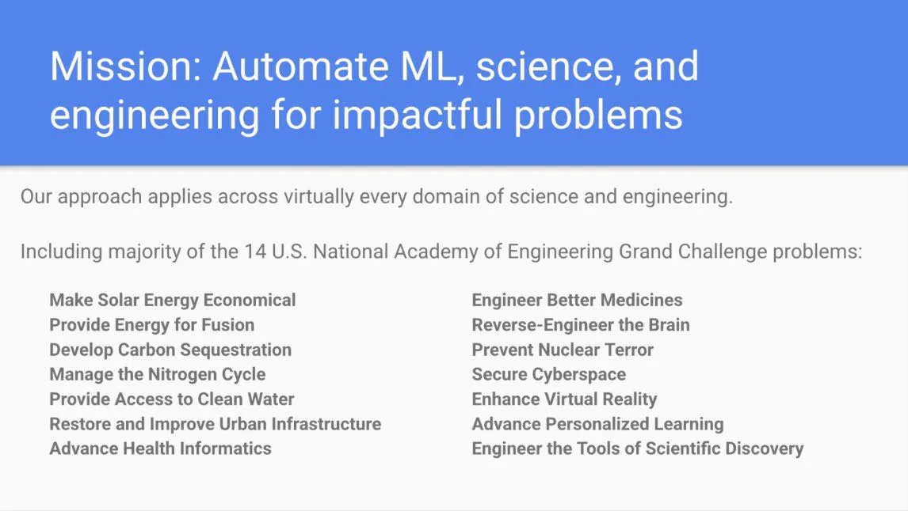
告别信明确提到「对 NAE Grand Challenge 问题做出有意义进展」——这张图正是 Dean 推文配图：14 项挑战的完整清单。
The research bottleneck isn't generating ideas — it's running experiments. AI will change that.
Khosla 投资逻辑 · “AI is the researcher.” —— 与 2018 年投 OpenAI 相提并论
2026-08-06 离职日，Jeff Dean 在 X 发布的告别信截图（用户一手提供）。这是公司成立动机的最权威陈述——比任何媒体转述都更原始。点击图片可放大阅读原文。
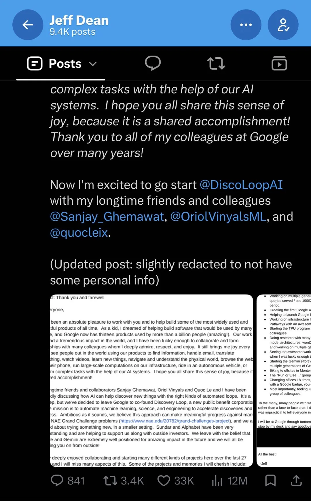
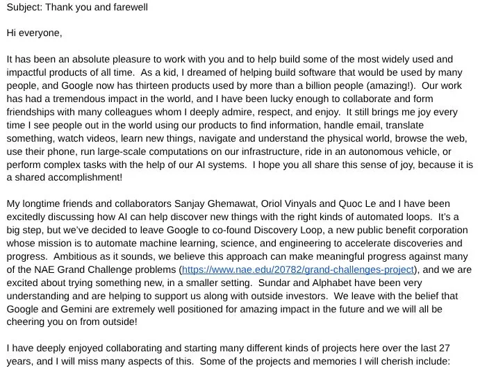
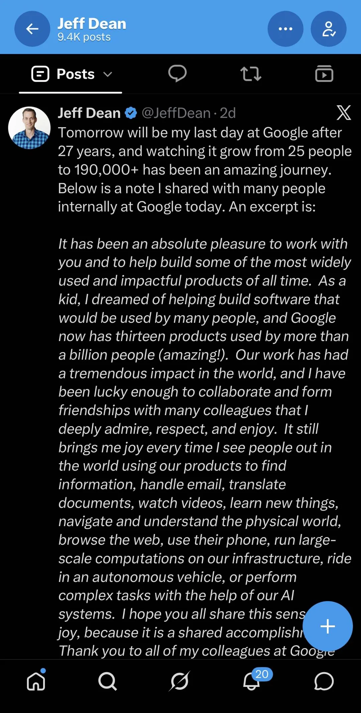
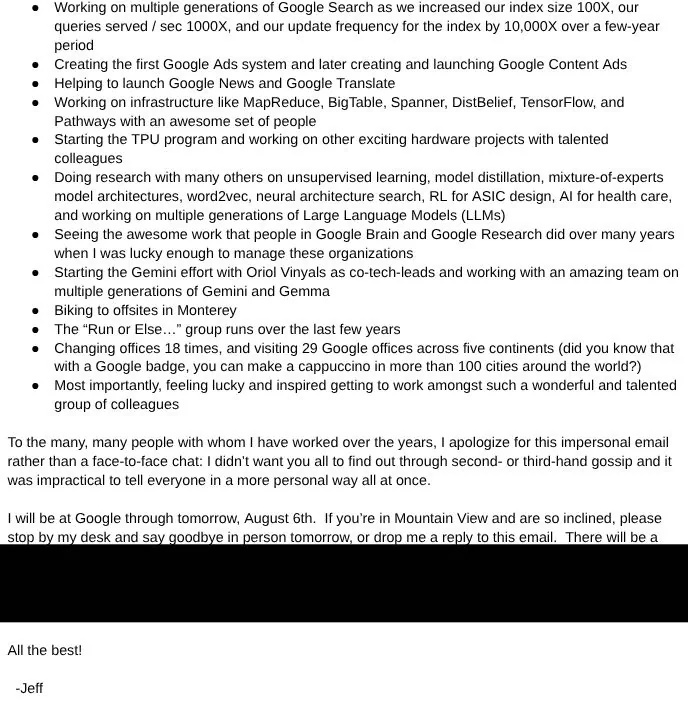
史上最「凡尔赛」的路演材料：没有商业模式、没有市场分析，就三页——「我们造过什么」「我们带过谁」「我们的影响力」。图片为量子位报道原图，点击可放大。
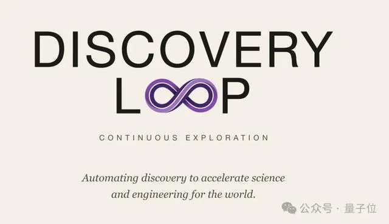
“Automating discovery to accelerate science and engineering for the world.” 与官网首页逐字一致。
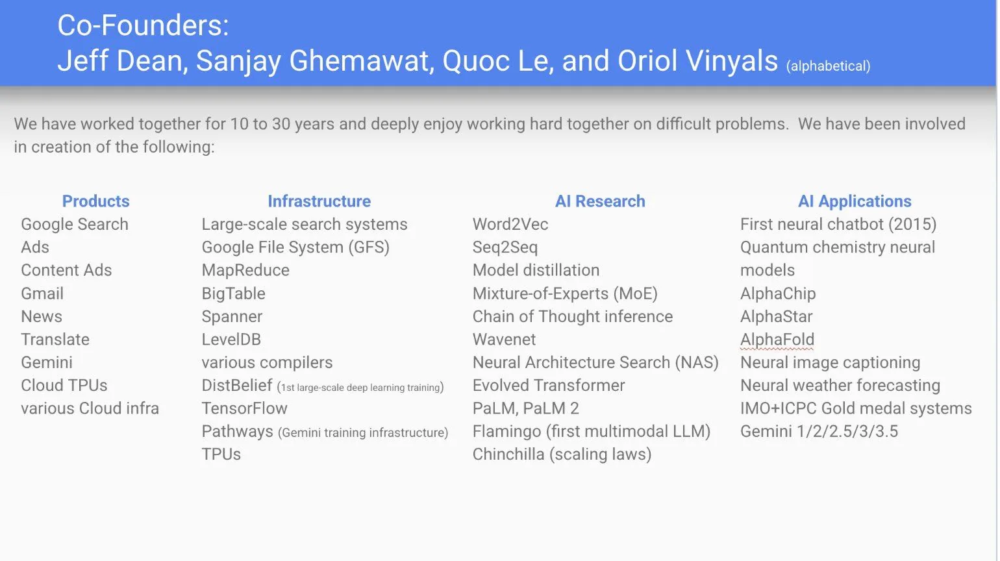
搜索/广告/Gmail/翻译/Gemini/TPU；GFS/MapReduce/Bigtable/Spanner/TensorFlow/Pathways；Word2Vec/Seq2Seq/MoE/蒸馏；AlphaChip/AlphaFold。网友吐槽：「这哥们做出过最好的产品，就是谷歌本身」。
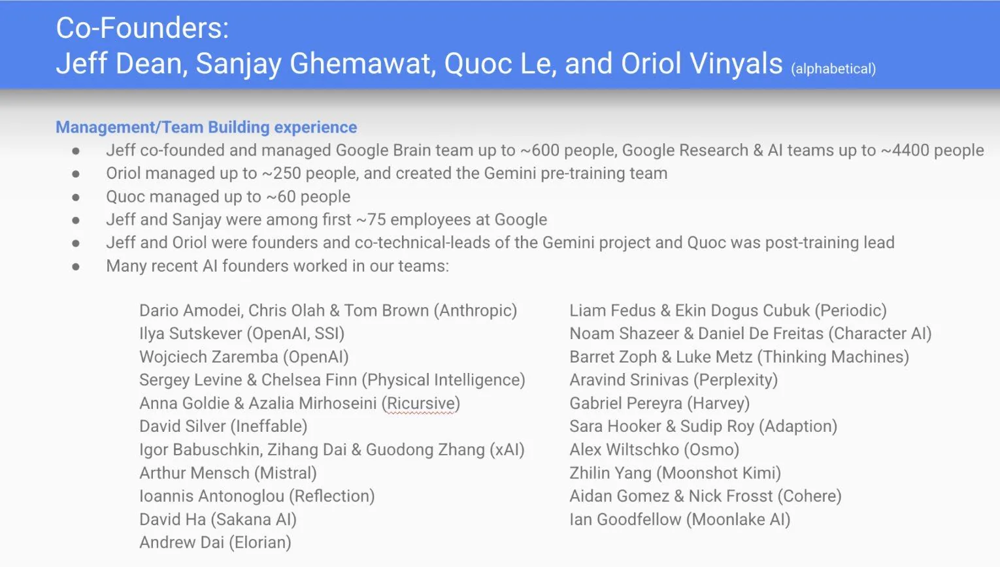
Dario Amodei（Anthropic）、Ilya Sutskever、Noam Shazeer（Character.AI）、Physical Intelligence / Thinking Machines / Sakana AI 创始人，以及杨植麟、戴子航、张国栋、任少卿。
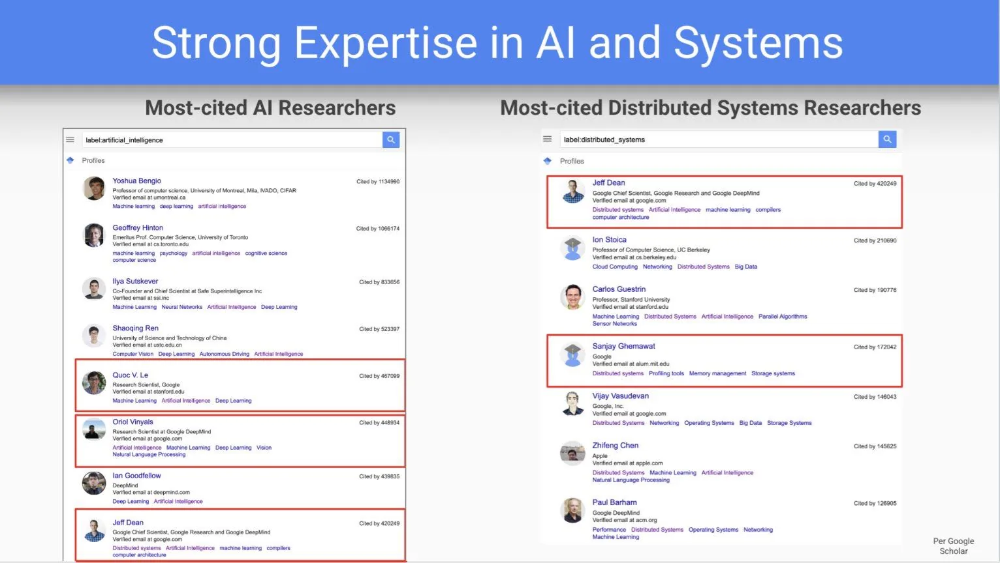
Jeff Dean 总引用 >42 万次，Sanjay Ghemawat >17 万次；同页还有 Bengio、Hinton、Ilya、Goodfellow、任少卿。翻译：最顶级的两个是我的联合创始人，还有两个是我带出来的。
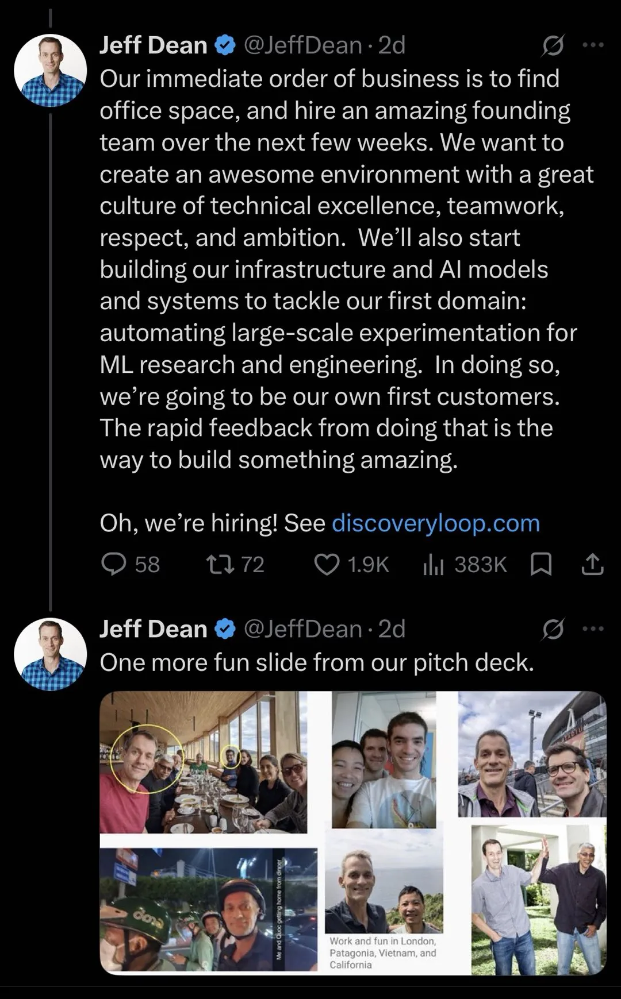
伦敦看球、巴塔哥尼亚聚餐、越南坐摩托、加州击掌——「我们在伦敦、巴塔哥尼亚、越南和加州一起工作、一起玩」。共事几十年的默契，本身就是最硬的壁垒。
一手信源：官宣推文原文、Wired 独家访谈细节、各方反应。推文截图来自量子位报道原图。
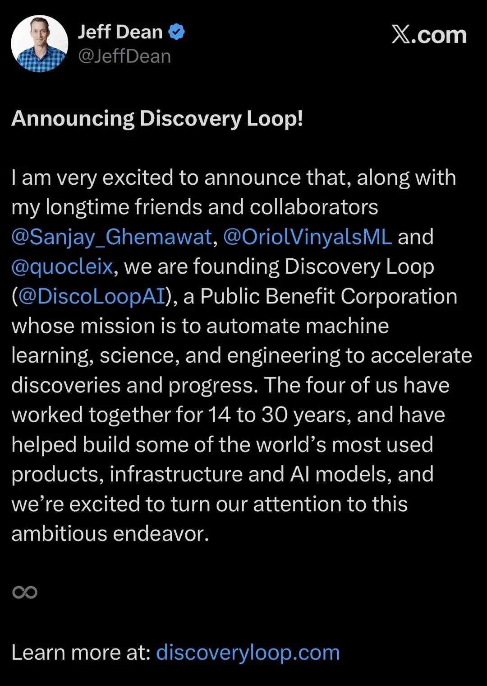
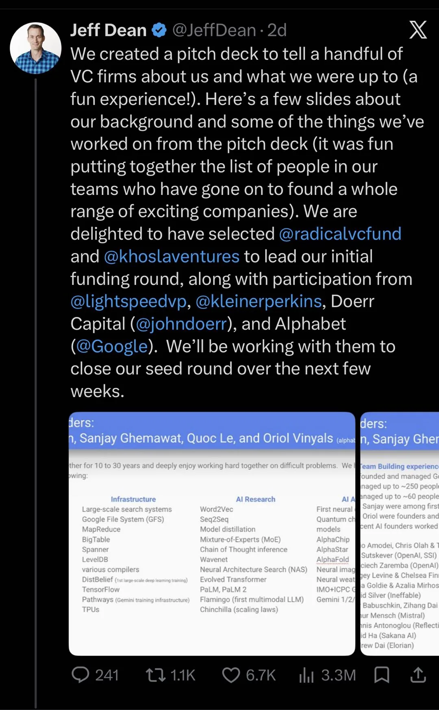
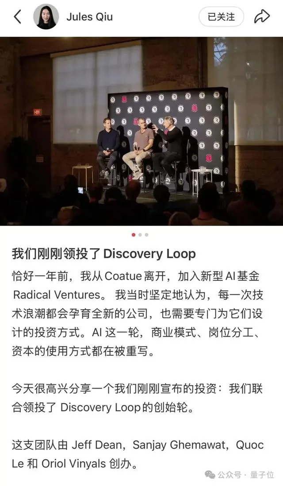
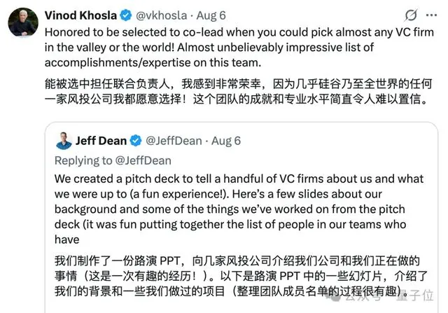
Pichai 多轮会议挽留四人（tried over multiple meetings to get them to keep their badges），最终祝福 + 投资 + 算力安排。
离职谈判细节 · Wired 独家 · VC 会面保密：Khosla 周六在 Sand Hill Road 办公室密会，其余在 Dean 家进行
CEO / 董事会 / 治理 / 融资 / 招聘——全部有独立一手信源。
Wired 采访说想法「几周前才成型」，但域名元数据揭示了更长的筹备期。
NameCheap 注册，隐私保护。比公开早 8 个月 —— 筹备期的第一个脚印。
CertSpotter 记录的唯一证书 —— 官网实际上线准备在 7 月下旬。
Ashby 招聘系统发布 Member of Technical Staff（Palo Alto）；同日 20:20 UTC discoveryloop.com 域名记录变更（收购的老域名，GoDaddy NS，2009 年注册）。
Pichai 官方声明：「独立公共利益公司，founding investor + Cloud 合作伙伴」。四人组同日官宣。
CEO = Jeff Dean 确认；Khosla 投资逻辑原话「AI is the researcher」；pitch deck 实际只有几页幻灯片，没用 AI 做。
疑似所有权转移 —— 与公开时间线呼应，谜团未解（🟡）。
Wired 披露的闭环：不靠卖 API，靠「自动实验循环」本身。
不是传统 SaaS 卖给大厂，而是小团队 + 高杠杆：几个人能比大团队更快更高质量做科研。客户 = 需要加速实验的科研组织。
第二步「做自己的第一个客户」= 用自家系统加速自家研究，闭环里跑出价值，再外溢到药物/材料/芯片/能源。
实验循环数（不是 token/算力）：一天一轮 → 一分钟/一小时一轮，并行数千上万个；加上实验质量评估（哪个最有价值/成功概率/先投哪个方向）。
Dario Amodei（Anthropic）、Ilya Sutskever、Noam Shazeer（Character.AI）撑起 AI 创业圈半壁江山——但名单上还有四位华人创业者。
CMU 读博期间进入 Google Brain 与 Quoc Le 合作，共著 Transformer-XL + XLNet（突破固定文本窗口）；创办月之暗面做出 Kimi，长文本能力是最早出圈的标签。
杨植麟老搭档，Transformer-XL/XLNet 共同一作，斯坦福 LTI 博士，后加入 xAI 创始团队。
浙大校友，Google Brain/DeepMind 实习经历，xAI 最初创始团队成员。
Faster R-CNN 核心作者，Google Scholar 高引页同框出现；后投身自动驾驶领域。
对抗式分析：每个判断都附反方自检。
Alphabet 自己投资 + 供算力 = 承认体内做不了、但不想失去这些人；PBC 是法律层面的耐心资本承诺。同时 2026 夏 Google 流失的是「建造基础设施本身的人」：Jumper→Anthropic、Shazeer→OpenAI、Dean 四人组→自立——行业权力从大厂向创始人的质变点。反方：大厂依然垄断算力与分发，创始人公司多数依赖大厂供血（本例 Alphabet 就是 founding investor），Google 入股也可能是战略看门人——先观察再决定是否反击。
明面 AI4S，暗线是「用 AI 造更强的 AI」。递归跑通 = OpenAI 级叙事，这才是 Alphabet 供血的真正原因。反方：递归改进是业界共识目标，Google 内部 Gemini 团队同样在做——差异化在于四人组的系统级经验。
成立两条件恰好排除假说生成难题（Vinyals 承认是弱点）——聚焦可反复试验+可可靠评价的 ML 领域。聪明但保守：最需要突破的理论物理/临床医学不在射程。反方：NAE 大挑战路线图说明他们不打算永远待在 ML 舒适区。
AutoML/NAS 2017 年吹过一轮（Google 自己就是旗手：NASNet/Evolved Transformer），后来在真实科研中渗透有限——自动化模型搜索没有颠覆研究范式。质疑：Discovery Loop 是换个名字重来，还是真的找到了突破口（这次赌的是「自动化整个实验循环」而非只搜模型架构）？反方：这次有 4 个建过 Google 基础设施的人 + 算力全包 + 明确路线图，与前一次不可同日而语；且「循环」框架天然覆盖超参/数据/评估全栈，不止架构搜索。
“AI is the researcher” 是漂亮的营销叙事，但真正的护城河是创始人名望带来的资本引力——「VC 排队送钱还被挑着收」，这在估值和后续融资上是自我强化的飞轮。反方：Khosla 2018 押 OpenAI 赌的是赛道不是人（当时 Ilya 尚无今日名望）；这次人和赛道兼备，叙事只是结果不是原因。
如果「AI 自动化实验循环」真跑通：①学术界——不可复现危机放大、论文工厂获得加速器；②传统 AutoML 创业公司——被降维打击；③科研资助体系——「实验快」重估「洞察贵」。反方：这些风险都在 5-10 年尺度，且多数是「好问题的坏副作用」，不改变核心判断。
招聘 8/4 发布 + 域名 8/4 激活 + 官网证书 7/21 + .ai 域名 2025-12 注册——上线动作是系统性的，不是几周即兴。反方：8/4 只能证明「上线准备日」，不能证明「筹备期长度」——.ai 域名之谜未解，仍标 Yellow。
FutureSearch（非一手，8/6 独立分析）中位数预测：首个 ML 产出 2027-08、20 员工 2027-06、ML 外首个成果 2030-08、首个商业化 2029-01；芯片设计突破概率 38%（2028 前，AlphaChip 前身）、材料 28%、临床最低 12-19%。反方：预测基于公开信息外推，对「递归自我改进」这类非线性变量估计能力有限——只能当标尺，不是事实。
Wired 细节：Pichai 多轮会议挽留（keep their badges）、Khosla 周六 Sand Hill Road 密会保密、其余会面在 Dean 家、pitch deck 没用 AI 做（“a few slides with our backgrounds and a rough sketch”）、四人“同事兼度假好友”。这些细节拼出：极度自信（不需要精美 PPT）+ 极度低调（保密到周六）+ 极度互信（度假好友共事）。反方：「没用 AI 做 PPT」可能只是时间仓促而非原则立场——但结合四人 AI 地位，更可能是对工具价值的清醒判断。
把页面从「静态还原」变成「活的追踪」——以下三个信号出现时，结论需要更新。
目前 Form D 检索 0 命中（负结果=证据），说明融资未 close 或低于申报门槛。一旦 close，金额与投资者名单将公开——验证「数亿美元」与 Khosla 领投叙事。
AutoML 第二次机会的判据 = 第一个可验证的「循环加速」案例。如果 12 个月内只有招聘没有产出，泡沫论占上风。
Ashby 目前只有 1 个职位。如果季度内扩到 5-10 个（覆盖基础设施/评估/平台工程），说明算力+数据管线已铺开；如果一直不扩，说明还在探索期。
一手信源铁律：所有事实均来自实际抓取，不凭预训练知识。分级标注如下。
| 层级 | 材料 | 状态 |
|---|---|---|
| 一手 | 官网全文 discoveryloop.com（真正的官网，非 .ai） | 8/8 直取 HTTP 200 |
| 一手 | BP 三页图片原件（封面/第一页/第三页/末页） | 量子位报道原图 |
| 一手 | Wired 独家采访（Steven Levy，launch 前四人全员受访） | 全文 |
| 一手 | Google 官方博客 Pichai 声明原文 | 全文 |
| 一手 | Ashby 招聘 API（职位/地点/发布时间） | API 直取 |
| 一手 | 域名元数据 RDAP / Verisign / CertSpotter | 注册时间线 |
| 一手 | TechCrunch 8/5 原报道 + Jeff Dean 官宣推文 | 全文 |
| 一手 | Jeff Dean 告别信全文（X 推文 4 张截图） | 用户一手提供 2026-08-08 |
| 一手 | Jeff Dean X 推文截图（官宣/循环图/NAE/融资幻灯片/BP 四页） | 用户一手提供 2026-08-08 |
| 一手 | 推文截图（Jules Qiu 领投 / Khosla 发帖） | 量子位报道原图 |
| 外部 | FutureSearch 预测（8/6 独立分析，非一手） | 🟡 仅作参考标尺 |
| 转引 | Axios「数亿美元」融资规模（知情人士，量子位转引） | 🟡 未官方确认 |
| 转引 | 量子位 BP 三页文字拆解（记者亲见 BP） | 🟡 与图片原件交叉验证一致 |
| 负结果 | SEC EDGAR Form D 检索 0 命中 → 种子轮未 close 或低于申报门槛 | 负结果=证据 |
| 未解 | .ai 域名 2025-12 注册之谜 / Axios 原文直取（VPC 阻断） | 已如实标注 |